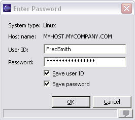

When you use the Remote System Explorer, you can save passwords for remote systems on your local PC. The stored passwords are then retrieved whenever a password is required to connect. When you save your password for a particular remote system, you will not be prompted to sign on when you try to connect to that system.
When you first try to connect to a remote system, you will be prompted with the following dialog:
To save this password on your local PC:
The next time that you connect to the remote system, you will not be prompted to sign on again.
Note: If you still want to be prompted for your user ID and password, right-click on the subsystem and select Connect.
You can use the password information page to add, change, and remove stored passwords for remote systems:
Use the Add, Change, and Remove buttons to manage your password information for remote systems.